Тест-дизайн
Часть 1
Теория
Исчерпывающее тестирование
Проверяем все воможные случаи/варианты значений
Если случай тривиальный или проверка экстремально важна
Тест-дизайн
процесс проектирования тестовых случаев
Техники тест-дизайна
набор практик и подходов к проектированию тестов
Классы эквивалентности
Техника для проверки разных наборов входных данных
Строится на предположениях:
- для тестов с элементами из одного класса одинаковый ожидаемый результат
- если один элемент класса находит ошибку, то и другой ее найдет
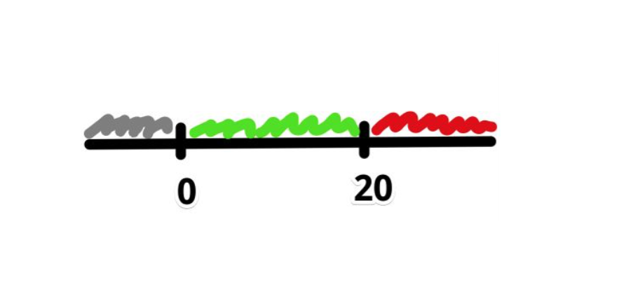 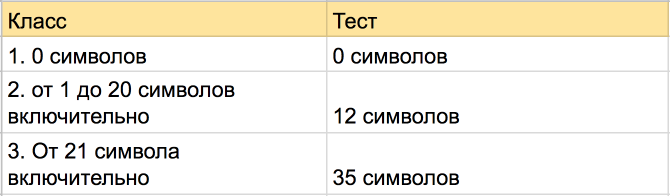
Граничные значения
Техника для проверки разных наборов входных данных строится на предположении:
- Ошибки чаще всего случаются на границах классов эквивалентности
Граничные значения
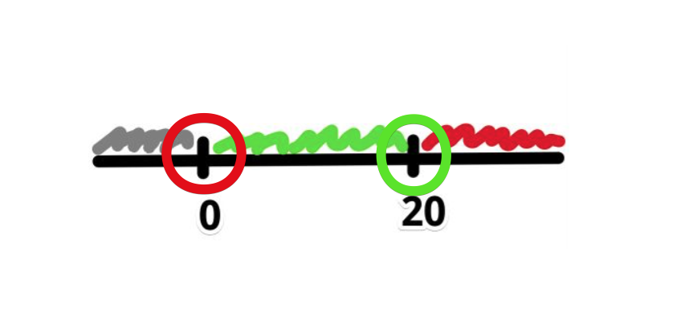Приграничные значения
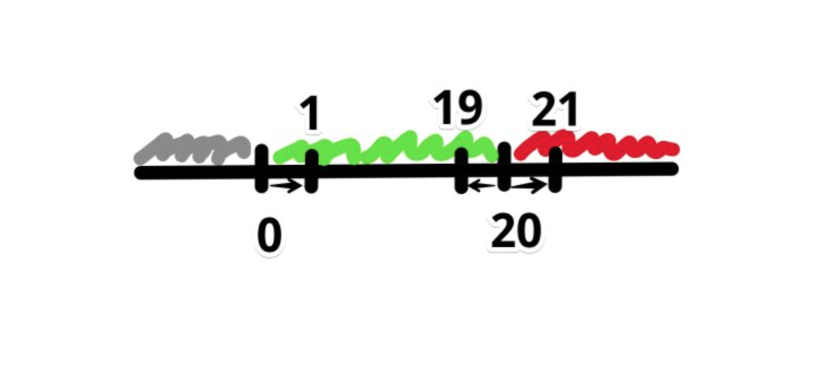Классы + границы = тесты:
- 0 символов
- 1 символ
- 12 символов
- 19 символов
- 20 символов
- 21 символ
- 35 символов
Классы могут быть разные
- по количеству символов
- по типу символов
- размер картинки в верстке
- размер загружаемого файла
- крайние даты месяца/года
- и т.д
Как тестировать?
- Каким бывает тестируемое поле?
- Каким оно не бывает?
- Какие есть границы между 1 и 2?
- Выбрать по 1 представителю от каждого класса
- Выбрать значения на границах
- Выбрать приграничные значения
Идеи для проверок полей ввода
- ограничения на длину поля (не больше 9)
- ограничения на вводимые символы (“,%@, abc)
- ограничения на положение символов (твит c #)
- валидность по типу поля (32 мая)
- обязательность/пустое поле
- лишние пробелы (в начале/конце/середине)
Попарное тестирование
Техника для формирования сочетания данных, когда есть зависимые поля, и нужно проверить все строится на предположении:
- большинство ошибок находятся на одном параметре или сочетании двух
Каждое тестируемое значение каждого из проверяемых параметров хотя бы единожды сочетается с каждым тестируемым значением всех остальных проверяемых параметров
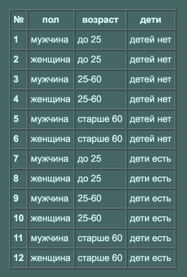
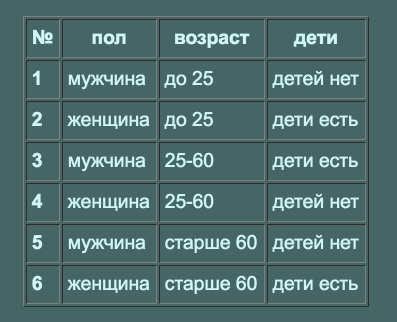
Правило!
Нельзя объединять два негативных кейса в один
Почему?Иначе будет непонятно, который обработался программой
Диаграмма состояний
Техника для сущностей, у которых есть жизненный цикл
Помогает найти все состояния объекта, переходы и условия переходов между состояниями

- Состояние
- Переход
- Событие/условие
- Действие
- Точки входа/выхода
Что проверяем?
- Как система ведет себя в определенном состоянии?
- Факт перехода между состояниями?
- Если не выполнены все условия для перехода?
- Если выполнены все условия/события для перехода?
Диаграмма состояний
Что еще?
Найти и проверить запрещенные переходы при помощи матрицы переходов
Состояния письма
- Сразу после получения сообщений с почтового сервера они помечены как непрочитанные.
- Когда пользователь открывает письмо, сообщение становится прочитанным.
- Пользователь может пометить ранее прочитанные сообщения как непрочитанные.
- Пользователь может удалить сообщения (как прочитанные, так и непрочитанные), вернуть их нельзя
Матрица переходов
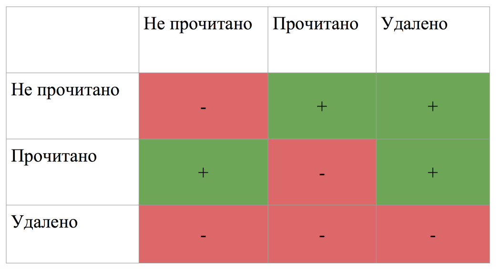Пример диаграммы состояний
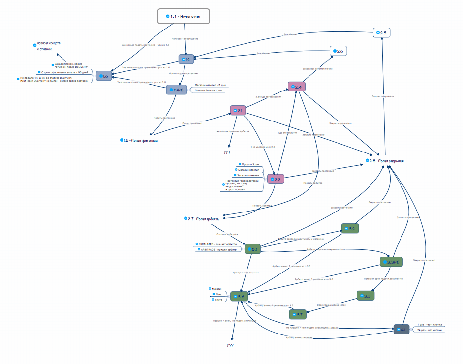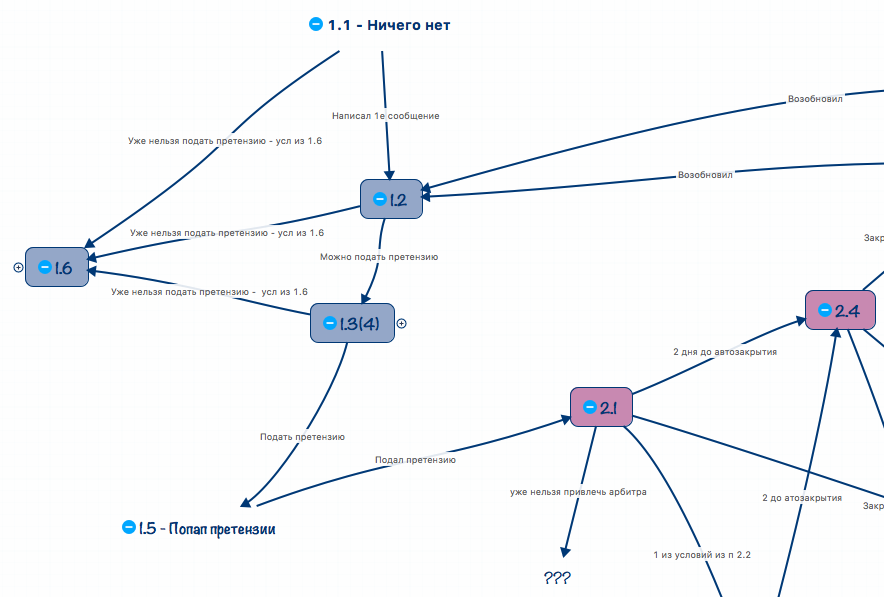
MindMap
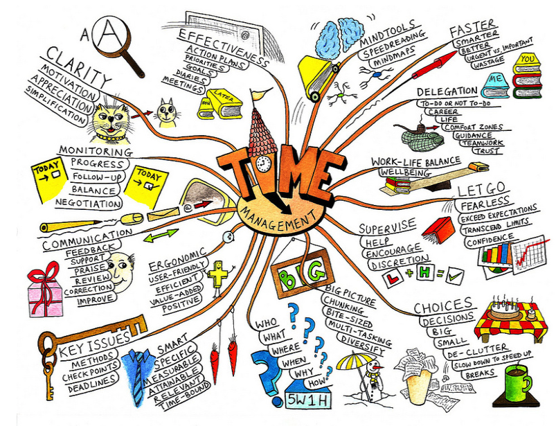
Инструменты MindMap
- XMind
- MindJet Mindmanager
- Mindmeister
- FreeMind
- и др.
Декомпозиция при помощи MindMap
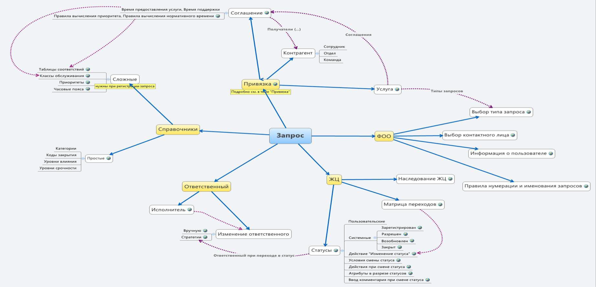Другие приемы в тестировании
Прием "4 действия с объектом"
- Создание
- Просмотр
- Редактирование
- Удаление
Причина - следствие
Причина: Ввод значения в поле и нажатие "Добавить"
Следствие: Добаленное значение отображается во всех нужных местах
"НЕ" к каждому слову в требовании
Если (не) код (не) введен (не) верно, открывается страница регистрации
Предугадывание ошибки
"Пользователь должен ввести код"
- А что если не ввел код?
- А что если неправильный код?
- и тд
Итого
Техники и приемы
- Классы эквивалентности и анализ граничных значений
- Попарное тестирование
- Диаграмма состояний и матрица переходов
- Приемы: 4 действия, причина-следтсвие, "не" и предугадывание
Зачем?
- Структурировать
- Найти все необходимые проверки
- Сделать тестов меньше, а покрытие больше
Покрытие
Метрика качества тестирования. Полнота охвата тестами требований или кода.
Отношение количества тестов к количеству требований.
Качество построенных тестов зависит от полноты информации о продукте.
Часть 2
Практика
Тестирование формы регистрации
Валидный - соответствующий требованиям, допустимый.
Поле ввода "Имя"
- Требования
- Принимает только буквенные значения
- Длина от 2 до 30 символов
- Обязательно к заполнению
Принимает только буквенные значения
- Допустимые значения (Буквы)
- Недопустимые значения (Цифры, Спецсимволы)
Длина от 2 до 30 символов
- Значения на границах (2 символа и 30)
- Приграничные значения (3, 29)
- Значения за пределами границ (1, 45)
Позитивные проверки
- Принимает только буквенные значения
- Длина от 2 до 30 символов
- Обязательное поле
- Значение из диапазона - "Олег"
- Левая граница - "Ян"
- Приграничные значения - "Оля", "Ррррррррррррррррррррррррррррр"
- Правая граница - "Паула Хуан Непомукено Криспино"
- Составное имя, например - "Анна-Мария"
Негативные проверки
- Принимает буквенные значения
- Длина от 2 до 30 символов
- Обязательное поле
- Пустое поле
- Пробелы
- Спецсимволы
- Цифры
- Ввести > 30 символов
- Ввести < 2 символов
Поле ввода "Email"
- Требования:
- 1. Поле проверяет, чтобы email был формата login@domain.tld
- 2. Максимальная длина 40 символов
- 3. Обязательно к заполнению
Позитивное тестировани
|
|
Негативные проверки
|
|
Заключительная часть
Тестирование - анализ продукта на соответствие требованиям
Важно анализировать требования
QA, QC, testing
Testing
прохождение тест-кейсов, локализация ошибок, описание багов и т.д.
QC (Quality Control)
контроль за качеством продукта, т.е. анализ результатов тестирования и качества продукта
в процессе разработки.
Обязанности QC
- контролирует текущее качество продукта;
- сравнивает продукт с предыдущими версиями и запланированными характеристиками;
- принимает решение о готовности продукта к релизу;
- пишет тестовую документацию;
- собирает информацию о тестировании и результатах тестирования от других
тестировщиков.
QA (Quality Assurance)
обеспечение качества продукта, т.е. данное понятие затрагивает более глобальные
задачи.
Обязанности QA
- анализ работы тестировщиков и QC;
- решает проблемы, относящиеся к тестированию и улучшению качества продукта в
целом;
- анализирует работу команды разработки;
- увеличивает эффективность работы команды.
Testing
прохождение тест-кейсов, локализация ошибок, описание багов и т.д.
QC (Quality Control)
контроль за качеством продукта, т.е. анализ результатов тестирования и качества продукта в процессе разработки.
Обязанности QC
- контролирует текущее качество продукта;
- сравнивает продукт с предыдущими версиями и запланированными характеристиками;
- принимает решение о готовности продукта к релизу;
- пишет тестовую документацию;
- собирает информацию о тестировании и результатах тестирования от других тестировщиков.
QA (Quality Assurance)
обеспечение качества продукта, т.е. данное понятие затрагивает более глобальные задачи.
Обязанности QA
- анализ работы тестировщиков и QC;
- решает проблемы, относящиеся к тестированию и улучшению качества продукта в целом;
- анализирует работу команды разработки;
- увеличивает эффективность работы команды.
Вопросы?
Рекомендации:
Найти все варианты проверок поля First Name
 http://testingchallenges.thetestingmap.org/index.php
http://testingchallenges.thetestingmap.org/index.php
Литература
Как строить интеллектуальные карты